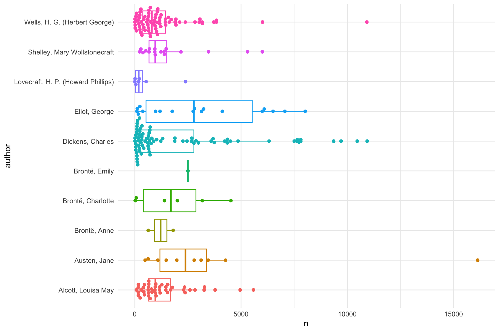

library(tidyverse) # infrastructure
theme_set(theme_minimal()) # make plots not look bad
library(lpSolve) # used to match fitted and true topics
library(tictoc) # timing
library(tmfast) # fit topic models fast!
library(stm) # standard topic model package
library(tidytext) # tidiers for stm modelstmfast fits topic models fast
Daniel J. Hicks ![]()
Introduction
Topic modeling is a natural language processing (NLP) technique popular among digital humanists, computational social scientists, and data scientists working with textual data (eg, product reviews) [cites]. Compared to methods such as vector space embeddings or general-use clustering algorithms such as \(k\)-means, a key advantage of topic modeling is that it simultaneously clusters both text units (terms or phrases) and documents, enabling analysts to provide human-meaningful, domain-specific labels to the clusters (topics).
However, a key disadvantage of topic modeling is that the models are relatively computationally intensive and slow to fit. This strongly discourages analysts from fitting and comparing multiple models, which is arguably the best way to determine to what extent results are sensitive to researcher degrees of freedom [Gelman]. Instead, typically analysts fit a few models to a given corpus and focus interpretation on a single “best” model (which is often chosen by informal assessments of “interpretability” of the fitted topics).
This paper reports tmfast, an R package designed to facilitate a multiple-model approach by using a significantly faster fitting algorithm. After giving a brief mathematical background, I walk through two examples of tmfast in action: generating and fitting models to a simulated text corpus, and then fitting models to a collection of books by different authors retrieved from Project Gutenberg. Note that both of these examples are supervised cases — the true topics are known a priori — and so I can use a method from [Malaterre and] to assess the goodness of fit. In addition, I also fit models using the stm package — generally regarded as the state of the art in topic modelling in R — and compare the models fitted by the two packages.
Mathematical background
Topic modeling is typically framed using a generative model. A corpus \(C\) is defined by a fixed vocabulary or collection of terms \(T\); a collection of \(k\) topics \(B\), where each topic \(\beta \in B\) is a multinomial distribution over \(W\); and parameters \(\lambda > 0\) and \(\alpha = (\alpha_1, \ldots, \alpha_k)\) with each \(\alpha_i > 0\). Then a document \(d\) is generated as follows:
- Draw the total length \(N_d\) of \(d\) from a Poisson distribution, \(N_ds \sim \textrm{Poisson}(\lambda)\) (other distributions over the whole numbers might be used here, eg, negative binomial)
- Draw a (\(k\)-element) topic distribution \(\theta_d\) from the Dirichlet distribution defined by \(\alpha\), \(\theta_d \sim \textrm{Dir}(\alpha)\)
- For each token \(t_i\) (\(i = 1, \ldots, N\)),
- Draw a topic \(b_i \sim \textrm{Multinomial}(\theta_d)\)
- Draw a term from the topic, \(t_i \sim b_i\) [@BleiLatentDirichletAllocation2003 996].
This generative model is used to define a joint probability distribution that is then fit to the data (observed document lengths and token counts) using numerical methods such as variational Bayes.
@RoheVintageFactorAnalysis2020 take a different approach to topic modeling, viewing it through the lens of principal component analysis (PCA) and the varimax rotation.
Consider a rectangular dataset \(X\) with \(n\) observations of \(p\) variables (\(n \times p\)). In a statistics or data science context, PCA is used for dimension reduction, representing these data with \(k < p\) dimensions while preserving as much of the original variance as possible. Contemporary approaches to PCA use the singular value decomposition
\[ X = U \Sigma V^t = U L^t \]
where \(U\) is a \(n \times n\) orthogonal matrix (the column vectors are orthogonal and length 1), \(\Sigma\) is a \(n \times p\) diagonal matrix (all non-diagonal entries are 0), and \(V\) is a \(p \times p\) orthogonal matrix. \(L = V \Sigma^t\) is a \(p \times n\) matrix called the loadings. When \(p < n\) (that is, more observations than variables) then columns \(p+1, p+2, \ldots, n\) of the loadings will be zero, and columns \(1, 2, \ldots, p\) can be interpreted as a new set of \(p\) variables constructed from the observed \(p\) variables. The rows of \(U\) are called the scores; they represent the values of the observations in the new variables.
If \(X\) is centered (mean of each column/variable is 0) then the SVD is related to the covariance of the original variables in such a way that the new variables are ordered from greatest to least variance, and the original and new variables have the same total variance. So if we restrict our attention to the first \(k\) new variables we will have a smaller representation of the original dataset that captures as much of the original variance as possible. Formally, let \(U_k\) be the \(n \times k\) matrix with columns \(1, \ldots, k\) of \(U\) and \(L_k = V_k \Sigma_k^t\) the corresponding \(p \times k\) partial loadings matrix. Then \(X \approx U_k \Sigma_k V_k^t\).
The loadings matrix is generally not easy to interpret, because the new variables are arbitrary linear combinations of the original variables. Such interpretations are essential in factor analysis, which attempts to identify interpretable latent variables from the data, such as psychological constructs corresponding to (weighted) sets of items in a survey instrument.1 Psychometricians proposed to address this problem by finding a \(k \times k\) orthogonal2 matrix \(T\)
\[ U_k L_k^t = U_k T^t T L_k^t = U_k T^t (L_k T)^t \]
that (roughly) makes the “rotated” scores and loadings, \(U_k T^t\) and \(L_k T\), as sparse as possible, that is, have as few non-zero entries as possible. This makes the new variables much more interpretable, as generalizations or abstractions of a small collection of observed variables. Because orthogonal matrices generalize rotations and the method for finding this \(T\) involves maximizing a total variance, this method is called the varimax rotation.
Finally, to semi-formally motivate a connection between PCA and topic modeling, consider \(r_{td}\), the occurrence rate of term \(t\) in document \(d\). This rate estimates the conditional probability of \(t\) given \(d\):
\[ r_{td} \approx \Pr(t | d) = \sum_i \Pr(t | b_i) \Pr(b_i | d) = \sum_i b_i \theta_d, \]
with a slight abuse of notation. In other words, topic modeling can be seen as factoring the (more-or-less observed) term-document distribution into two sets of latent distributions, term-topic and topic-document, much like PCA factors a data matrix into scores and loadings in latent variables. See @RoheVintageFactorAnalysis2020 lemma 5.2 for a formal development of this connection.
The upshot is that the latent variables constructed using PCA + varimax can be interpreted as topics. Sparsity means that a given document will have near-zero value for all but a few topics, and a given topic will have near-zero value for all but a few documents.
The most obvious potential advantage of this approach is speed. Text data is typically extremely sparse — documents typically contain only a small fraction of the words in the full vocabulary — and efficient algorithms have been developed for partial SVD of sparse matrices [@BaglamaAugmentedImplicitlyRestarted2005].
The tmfast package implements this PCA + varimax approach to topic modeling in R, with specific support for the tidyverse idiom. The irlba package [cite] is used for efficient SVD (by default; users can specify an alternative SVD method if they prefer).
Example 1: A simulated corpus
tmfast also includes a collection of functions to generate a simulated corpus according to the standard generative model. In this section, we use these functions to generate a corpus, fit topic models using tmfast and stm [cite] — widely used for topic modeling in R — and compare their respective ability to identify the true topics used to generate the corpus.
We first load the tidyverse suite, the lpSolve package to match fitted and true topics, the tictoc package to calculate wall compute times, and tmfast and stm. The tidytext package is also loaded for its stm tidiers (eg, functions to represent a fitted stm model as a dataframe).
Simulation parameters
We create simulated text data following the data-generating process assumed by LDA. Specifically, each document will be generated from one of several “journals.” Each journal corresponds to a topic, and vice versa, in that documents from journal \(j\) will tend to have a much greater probability for topic \(j\) than the other topics.
We first specify the number of topics/journals k, and the number of documents to draw from each journal Mj, for a total of M = Mj * k documents in the corpus. We also specify the length of the vocabulary (total unique words) as a multiple of the total number of documents M. Document lengths are generated using a negative binomial distribution, using the size-mean parameterization. Per ?NegBinomial, the standard deviation of document lengths in this parameterization is \(\sqrt{\mu + \frac{\mu^2}{\mathrm{size}}}\).
k = 10 # Num. topics / journals
Mj = 100 # Num. documents per journal
M = Mj*k # Total corpus size
vocab = M # Vocabulary length
## Negative binomial distribution of doc lengths
size = 10 # Size and mean
mu = 300
sqrt(mu + mu^2/size) # Resulting SD of document sizes[1] 96.43651Topic-document and word-topic distributions are both sampled from Dirichlet distributions. For topic-docs, we use an asymmetric Dirichlet distribution3 where one component will have (in expectation) most of the probability mass (eg, 80%) and the remaining probability mass will be (in expectation) distributed evenly over the remaining components (eg, \(0.2/(k-1)\)). For word-topics we use a symmetric Dirichlet distribution (parametized only by the scaling factor). tmfast includes utility functions for constructing and drawing both kinds of Dirichlet distributions.
## Dirichlet distributions for topic-docs and word-topics
topic_peak = .8
topic_scale = 10
peak_alpha(k, 1, peak = topic_peak, scale = topic_scale) [1] 8.0000000 0.2222222 0.2222222 0.2222222 0.2222222 0.2222222 0.2222222
[8] 0.2222222 0.2222222 0.2222222peak_alpha(k, 2, peak = topic_peak, scale = topic_scale) [1] 0.2222222 8.0000000 0.2222222 0.2222222 0.2222222 0.2222222 0.2222222
[8] 0.2222222 0.2222222 0.2222222word_beta = 0.1Because the simulations involve drawing samples using a RNG, we set a seed.
set.seed(2022-06-19)Draw true topic distributions
We generate the true topic-document distributions \(p(\theta = t | \mathrm{doc}_m)\), often simply called \(\theta\) or \(\gamma\). In this vignette we use \(\theta\) for the true distribution and \(\gamma\) for the fitted distribution in the topic model. Each document’s \(\theta\) is sampled from a Dirichlet distribution (rdirichlet()), with the parameter \(\mathbf{\alpha}\) corresponding to the document’s journal \(j\). The variable theta is a M by k matrix; theta_df is a tidy representation with columns doc, topic, and prob. The visualization confirms that documents are generally most strongly associated with the corresponding topics, though with some noise: in the median document, 82% of its topic probability mass is associated with the single dominant topic.
## Journal-specific alpha, with a peak value (80%) and uniform otherwise
theta = map(1:k,
~rdirichlet(Mj,
peak_alpha(k, .x,
peak = topic_peak,
scale = topic_scale))) |>
reduce(rbind)
theta_df = theta |>
as_tibble(rownames = 'doc',
.name_repair = tmfast:::make_colnames) |>
mutate(doc = as.integer(doc)) |>
pivot_longer(starts_with('V'),
names_to = 'topic',
values_to = 'theta')
ggplot(theta_df, aes(doc, topic, fill = theta)) +
geom_tile()
theta_df |>
group_by(doc) |>
summarize(max = max(theta)) |>
pull(max) |>
summary() Min. 1st Qu. Median Mean 3rd Qu. Max.
0.3567 0.7148 0.8192 0.7958 0.8963 0.9901 Draw true word distributions
Next we generate the true word-topic distributions \(p(\phi = w | \theta = t)\), often designed as either \(\phi\) or \(\beta\). We use \(\phi\) for the true distribution and \(\beta\) for the fitted distribution. We sample these distributions from a symmetric Dirichlet distribution over the length of the vocabulary with \(\alpha = .01\). Tile and Zipfian (probability vs. rank on a log-log scale) plots confirm these distributions are working correctly.
## phi_j: Word distribution for topic j
phi = rdirichlet(k, word_beta, k = vocab)
phi_df = phi |>
t() |>
as_tibble(rownames = 'token',
.name_repair = tmfast:::make_colnames) |>
pivot_longer(starts_with('V'),
names_to = 'topic',
values_to = 'phi')
## Word distributions
ggplot(phi_df, aes(topic, token, fill = (phi))) +
geom_tile() +
scale_y_discrete(breaks = NULL)## Zipf's law
phi_df |>
group_by(topic) |>
mutate(rank = rank(desc(phi))) |>
arrange(topic, rank) |>
filter(rank < vocab/2) |>
ggplot(aes(rank, phi, color = topic)) +
geom_line() +
scale_x_log10() +
scale_y_log10()Document lengths
Again, document lengths are drawn from a negative binomial distribution.
## N_i: Length of document i
N = rnbinom(M, size = size, mu = mu)
summary(N) Min. 1st Qu. Median Mean 3rd Qu. Max.
93.0 240.8 300.5 308.6 364.5 774.0 sd(N)[1] 95.1555hist(N)
Draw corpus
Finally we draw the corpus, the observed word counts for each document. This is the most time-consuming step in this script, much slower than actually fitting the topic model. Experimenting with this simulation, we found that log1p() scaling of the word counts produced better results than other scaling techniques (eg, dividing by the total length of each document, scaling words by their standard deviation) for accounting for radical differences in document length.
tic()
corpus = draw_corpus(N, theta, phi)
toc()26.182 sec elapseddtm = mutate(corpus, n = log1p(n))Fit the topic model
Fitting the topic model is extremely fast. Note that we can request multiple values of \(k\) (numbers of topics) in a single call. Other topic modelling packages typically fit only a single value of \(k\) at a time.
Under the hood, we cast the document-term matrix to a sparse matrix class if necessary. Then we extract the maximum number of desired principal components using irlba::prcomp_irlba(), centering but not scaling the logged word counts. (Experiments with this simulation indicated that scaling makes it more difficult to construct probability distributions later.) Next we use the base R function stats:varimax() to construct a preliminary varimax rotation of the principal components. Because the direction of factors is arbitrary as far as varimax is concerned, but meaningful when we convert things to probability distributions, we check the skew of each factor’s loadings in the preliminary fit, and reverse the factors with negative skew (long left tails with relatively large negative values).
tic()
fitted = tmfast(dtm, c(3, 5, k, 2*k))
toc()0.645 sec elapsedThe object returned by tmfast() has a simple structure. totalvar and sdev come from the PCA step, giving the total variance across all feature variables and the standard deviation of each extracted principal component. (Note that these PCs do not generally correspond to the varimax-rotated factors/topics.) n contains the sizes (number of factors/topics) fitted for the models, and varimaxes contains the varimax fit for each value of n. The varimax objects each contain three matrices, the rotated loadings (word-topics), the rotation matrix rotmat, and the rotated scores (document-topics). Note that these are not stored as probability distributions.
str(fitted, max.level = 2L)List of 9
$ totalvar: num 138
$ sdev : num [1:20] 3.26 3.06 3.01 2.97 2.93 ...
$ rows : chr [1:1000] "1" "2" "3" "4" ...
$ cols : chr [1:999] "5" "7" "8" "11" ...
$ center : Named num [1:999] 0.4016 0.0943 0.4254 0.2396 0.4093 ...
..- attr(*, "names")= chr [1:999] "5" "7" "8" "11" ...
$ scale : logi FALSE
$ rotation: num [1:999, 1:20] -0.00112 0.02725 0.01223 0.00457 -0.00883 ...
..- attr(*, "dimnames")=List of 2
$ n : num [1:4] 3 5 10 20
$ varimax :List of 4
..$ 3 :List of 3
..$ 5 :List of 3
..$ 10:List of 3
..$ 20:List of 3
- attr(*, "class")= chr [1:3] "tmfast" "varimaxes" "list"str(fitted$varimax$k) NULLBecause the model contains a sdev component, screeplot() works out of the box. Note that the first \(k\) PCs have much higher variance than the others, and often the \(k\)th PC is somewhat lower than the first \(k-1\). This reflects the highly simplified structure of the simulated data. Real datasets often have a much more gradual decline in the screeplot, likely reflecting the complex hierarchy of topics in actual documents.
screeplot(fitted, npcs = k + 5)
It’s also straightforward to calculate the share of total variance covered by successive principal components. Experimenting with this simulation, it’s common for \(k\) principal components to cover less than half of the total variance. Again, note that the rotated varimax factors don’t correspond to the principal components, but the total covered variance remains the same.
cumsum(fitted$sdev^2) / fitted$totalvar [1] 0.07689789 0.14466433 0.21018176 0.27420309 0.33636478 0.39492291
[7] 0.45196354 0.50563725 0.55705654 0.57380104 0.57606900 0.57828256
[13] 0.58048004 0.58264465 0.58479395 0.58691426 0.58902127 0.59107016
[19] 0.59311409 0.59514063data.frame(PC = 1:length(fitted$sdev),
cum_var = cumsum(fitted$sdev^2) / fitted$totalvar) |>
ggplot(aes(PC, cum_var)) +
geom_line() +
geom_point()
Fitting a conventional topic model (stm)
For comparison, we’ll also fit a conventional topic model using the stm package. To address the challenge of picking a number of topics, stm::stm() conducts a topic estimation process when passed K = 0. With the simulation parameters and the random seed used here, this process takes almost 12 seconds and produces a model with 33 topics. We therefore do not run the code below.
tic()
corpus |>
cast_sparse(doc, word, n) |>
stm(K = 0, verbose = FALSE)
toc()Setting K = k gives us a fitted topic model in a few seconds, about an order of magnitude slower than tmfast(). Profiling experiments indicated that tmfast() is about 20x faster than stm().
tic()
fitted_stm = corpus |>
cast_sparse(doc, word, n) |>
stm(K = k, verbose = FALSE)
toc()4.377 sec elapsedAssessing accuracy: Word-topic distributions
Using simulated data with true word-topic and topic-document distributions lets us check the accuracy of both tmfast and stm models. Here we’ll develop a method proposed by @MalaterreEarlyDaysContemporary2022, comparing distributions using Hellinger distance. For discrete probability distributions \(p, q\) over the same space \(X\), the Hellinger distance is given by
\[ d(p,q) = \frac{1}{\sqrt{2}} \sqrt{\sum_{x \in X} (\sqrt{p(x)} - \sqrt{q(x)})^2} = \frac{1}{\sqrt{2}} \lVert \sqrt p - \sqrt q \rVert_2. \]
The last equation means that the Hellinger distance is the Euclidean (\(L^2\)-norm) distance between the square roots of the distributions. Some authors working with topic models sometimes compare distributions using the \(L^2\)-norm of the distributions themselves, without the square root. But this approach is flawed, since probability distributions can have different lengths in the \(L^2\) norm. (For example, the distribution \(\left< 1, 0\right>\) has \(L^2\) length 1, while \(\left< \frac{1}{2}, \frac{1}{2} \right>\) has \(L^2\) length approximately 1.19.) Cosine similarity, which is also widely used by text analysts, is directly related to the \(L^2\)-norm and has the same problem.
Hellinger distance satisfies the equation \[ 1 - d^2(p, q) = \sum_{x \in X} \sqrt{p(x)q(x)}. \] When working with topic models, we’re interested in pairwise sets of Hellinger distances, either between all pairs of distributions from a single set (for example, the topic distributions for each document, as used in “discursive space” analysis [cite and xref]) or two sets (for example, comparing fitted vs. true word-topic distributions, as in this section). Working with two sets of distributions \(P = \{p_i | i \in I\}\) and \(Q = \{q_j | j \in J\}\), the right-hand side of the last equation is equivalent to a matrix multiplication.4 The tmfast::hellinger() function provides S3 methods for calculating Hellinger pairwise distances given a single dataframe, single matrix, or two dataframes or matrices.
First, however, we need to extract the word-topic distributions. tmfast provides a tidy() method, following the pattern of the topic model tidiers in the tidytext package. Unlike other topic models, tmfast objects can contain multiple models for different values of \(k\). So, in the second argument to tidy(), we need to specify which number of topics we want. The third argument specifies the desired set of distributions, either word-topics ('beta') or topic-documents ('gamma').
## beta: fitted varimax loadings, transformed to probability distributions
beta = tidy(fitted, k, 'beta')
beta# A tibble: 2,734 × 3
token topic beta
<chr> <chr> <dbl>
1 5 V02 0.0198
2 5 V08 0.00454
3 7 V01 0.00344
4 7 V02 0.00276
5 7 V06 0.000318
6 8 V01 0.00146
7 8 V02 0.00522
8 8 V09 0.0195
9 11 V02 0.0114
10 11 V04 0.00610
# … with 2,724 more rowsWord-topic distributions correspond to the varimax factor loadings. These loadings can take any real value. To convert them to probability distributions, within each factor (topic), we trim negative values to 0 and divide each loading by the sum of all loadings. The Zipfian plot below compares the fitted and true word-topic distributions. Consistently across experiments with this simulation, fitted distributions started off a little flatter, then dropped sharply after about 100 words. In other words, the varimax topic model highlights a relatively long list of characteristic words for each topic — the actual distributions have fewer characteristic words — and then ignores the other words.
## Compare Zipfian distributions
bind_rows(mutate(beta, type = 'fitted'),
{phi_df |>
rename(beta = phi) |>
mutate(type = 'true')}) |>
group_by(type, topic) |>
mutate(rank = rank(desc(beta))) |>
arrange(type, topic, rank) |>
filter(rank < vocab/2) |>
ggplot(aes(rank, beta,
color = type,
group = interaction(topic, type))) +
geom_line() +
scale_y_log10() +
scale_x_log10()The Zipfian distribution doesn’t tell us which fitted topics might correspond to which true topics. For that, following @MalaterreEarlyDaysContemporary2022, we’ll use pairwise Hellinger distances. There’s one complication, however. The parameters chosen for this simulation typically end up not drawing some of the words from the vocabulary, and they don’t end up in the same order as the true word-topic matrix phi. Fortunately words are represented as the integers 1:vocab, so it’s relatively painless to put them back in order and fill in the gaps (setting the probability for the missing words to be 0 across all topics). In the code block below, we first fix these issues with the words, widen the long dataframe, convert it to a matrix, and then calculate pairwise Hellinger distances with the true word-topic matrix phi.
## Hellinger distance of word-topic distributions
beta_mx = beta |>
## Fix order of words
mutate(token = as.integer(token)) |>
arrange(token) |>
## And dropped words
complete(token = 1:vocab, topic, fill = list(beta = 0)) |>
build_matrix(token, topic, beta, sparse = FALSE)
hellinger(phi, t(beta_mx)) V01 V02 V03 V04 V05 V06 V07
[1,] 0.9031738 0.1637336 0.9165058 0.9123347 0.8751537 0.8995845 0.9036184
[2,] 0.9059649 0.8784121 0.9101200 0.8988053 0.1568935 0.9154690 0.8912032
[3,] 0.9109254 0.8784830 0.9078316 0.8766395 0.8950844 0.8955629 0.8863298
[4,] 0.9364565 0.9175881 0.1665250 0.9072348 0.9071975 0.8779525 0.9121768
[5,] 0.8953244 0.9050252 0.9027020 0.8977285 0.8866189 0.9016970 0.1828639
[6,] 0.9229747 0.9117772 0.8779031 0.8931918 0.9100060 0.1807501 0.9014234
[7,] 0.1642187 0.9068759 0.9378145 0.8921973 0.9020294 0.9310713 0.8995111
[8,] 0.9146167 0.8876726 0.9160216 0.8977089 0.9003917 0.9068250 0.8869320
[9,] 0.8956926 0.9145803 0.9014559 0.1682888 0.8991201 0.9032983 0.8980827
[10,] 0.9112636 0.9152296 0.9052323 0.8935218 0.9000401 0.8869707 0.8837047
V08 V09 V10
[1,] 0.9223213 0.8852931 0.8929746
[2,] 0.9044976 0.8865806 0.9026687
[3,] 0.9139487 0.1770633 0.9222647
[4,] 0.9077645 0.9109467 0.9142646
[5,] 0.8797781 0.8815338 0.8907767
[6,] 0.8961334 0.8931672 0.9064453
[7,] 0.9032734 0.9106445 0.9160885
[8,] 0.8796820 0.9247945 0.1708753
[9,] 0.8968698 0.8872700 0.9004598
[10,] 0.1616073 0.9255980 0.8824513In this distance matrix, the rows are the true topics and the columns are the fitted topics. Low values correspond to greater similarity. It’s clear that the topics don’t match up perfectly — the minimum in each row is about 0.17 — but there is a clear minimum. We treat this as a linear assignment problem, which is solved rapidly using the lpSolve package. The solution — which matches true to fitted topics — can then be used as a rotation with both the loadings and scores (topic-document distributions). After rotating, the true-fitted pairs are on the diagonal of the Hellinger distance matrix, making it easy to extract and summarize the quality of the fit.
## Use lpSolve to match fitted topics to true topics
dist = hellinger(phi, t(beta_mx))
rotation = lp.assign(dist)$solution
rotation [,1] [,2] [,3] [,4] [,5] [,6] [,7] [,8] [,9] [,10]
[1,] 0 1 0 0 0 0 0 0 0 0
[2,] 0 0 0 0 1 0 0 0 0 0
[3,] 0 0 0 0 0 0 0 0 1 0
[4,] 0 0 1 0 0 0 0 0 0 0
[5,] 0 0 0 0 0 0 1 0 0 0
[6,] 0 0 0 0 0 1 0 0 0 0
[7,] 1 0 0 0 0 0 0 0 0 0
[8,] 0 0 0 0 0 0 0 0 0 1
[9,] 0 0 0 1 0 0 0 0 0 0
[10,] 0 0 0 0 0 0 0 1 0 0## Hellinger distance comparison using the lpSolve matching
hellinger(phi, rotation %*% t(beta_mx)) [,1] [,2] [,3] [,4] [,5] [,6] [,7]
[1,] 0.1637336 0.8751537 0.8852931 0.9165058 0.9036184 0.8995845 0.9031738
[2,] 0.8784121 0.1568935 0.8865806 0.9101200 0.8912032 0.9154690 0.9059649
[3,] 0.8784830 0.8950844 0.1770633 0.9078316 0.8863298 0.8955629 0.9109254
[4,] 0.9175881 0.9071975 0.9109467 0.1665250 0.9121768 0.8779525 0.9364565
[5,] 0.9050252 0.8866189 0.8815338 0.9027020 0.1828639 0.9016970 0.8953244
[6,] 0.9117772 0.9100060 0.8931672 0.8779031 0.9014234 0.1807501 0.9229747
[7,] 0.9068759 0.9020294 0.9106445 0.9378145 0.8995111 0.9310713 0.1642187
[8,] 0.8876726 0.9003917 0.9247945 0.9160216 0.8869320 0.9068250 0.9146167
[9,] 0.9145803 0.8991201 0.8872700 0.9014559 0.8980827 0.9032983 0.8956926
[10,] 0.9152296 0.9000401 0.9255980 0.9052323 0.8837047 0.8869707 0.9112636
[,8] [,9] [,10]
[1,] 0.8929746 0.9123347 0.9223213
[2,] 0.9026687 0.8988053 0.9044976
[3,] 0.9222647 0.8766395 0.9139487
[4,] 0.9142646 0.9072348 0.9077645
[5,] 0.8907767 0.8977285 0.8797781
[6,] 0.9064453 0.8931918 0.8961334
[7,] 0.9160885 0.8921973 0.9032734
[8,] 0.1708753 0.8977089 0.8796820
[9,] 0.9004598 0.1682888 0.8968698
[10,] 0.8824513 0.8935218 0.1616073hellinger(phi, rotation %*% t(beta_mx)) |>
diag() |>
summary() Min. 1st Qu. Median Mean 3rd Qu. Max.
0.1569 0.1639 0.1674 0.1693 0.1755 0.1829 And we do the same thing with the stm topic model. stm is somewhat more accurate than tmfast, with a median Hellinger distance of about 0.07 compared to 0.18. But stm is significantly slower.
beta_stm_mx = tidy(fitted_stm, matrix = 'beta') |>
## Fix order of words
mutate(term = as.integer(term)) |>
arrange(term) |>
## And dropped words
complete(term = 1:vocab, topic,
fill = list(beta = 0)) |>
build_matrix(term, topic, beta, sparse = FALSE)
hellinger(phi, t(beta_stm_mx)) 1 2 3 4 5 6
[1,] 0.08551476 0.84250732 0.84248134 0.88213508 0.87444870 0.87157834
[2,] 0.84329922 0.85367721 0.08226114 0.87003933 0.85853111 0.86964720
[3,] 0.84814338 0.08498287 0.84966302 0.85873155 0.83485457 0.87730942
[4,] 0.88728074 0.86458774 0.87596766 0.08716275 0.86137846 0.90341396
[5,] 0.86509433 0.84154766 0.84198078 0.86693020 0.85183981 0.85492194
[6,] 0.89275208 0.85457918 0.87148785 0.83690625 0.84770470 0.89097927
[7,] 0.87604529 0.87475670 0.86935797 0.89497509 0.86136575 0.08427024
[8,] 0.86179446 0.88513627 0.87104990 0.87765133 0.85763362 0.88206046
[9,] 0.88272319 0.84014092 0.86831204 0.85799803 0.09038475 0.86010142
[10,] 0.88217135 0.87848592 0.86296463 0.86880249 0.85155013 0.87344130
7 8 9 10
[1,] 0.85051526 0.86539658 0.87856817 0.86805865
[2,] 0.86158904 0.87025988 0.85982995 0.85353582
[3,] 0.88224633 0.85827133 0.87289308 0.84502101
[4,] 0.87295764 0.83661054 0.86684110 0.87271693
[5,] 0.84603547 0.86047913 0.83835750 0.07902295
[6,] 0.86282228 0.08880347 0.85411829 0.86252234
[7,] 0.87474253 0.89536072 0.86677860 0.85727623
[8,] 0.09267689 0.87054310 0.84452997 0.85300612
[9,] 0.85178500 0.85313348 0.85250779 0.85785724
[10,] 0.84600884 0.85587004 0.09097089 0.84596278rotation_stm = hellinger(phi, t(beta_stm_mx)) |>
lp.assign() |>
magrittr::extract2('solution')
hellinger(phi, rotation_stm %*% t(beta_stm_mx)) |>
diag() |>
summary() Min. 1st Qu. Median Mean 3rd Qu. Max.
0.07902 0.08445 0.08634 0.08661 0.08999 0.09268 The tidied word-topic distributions can be used in standard ways for further analysis, such as a Silge plot of the highest probability words for each topic. But because the “words” in this simulation are just integers, and not semantically meaningful, we don’t construct such a plot here.
{kind=link}
Renormalization: Topic-document distributions
Finally, we compare fitted and true topic-document distributions. We extract topic-document distributions using the same tidy() function, specifying the matrix gamma and including the rotation above to align the fitted and true topics. Tile and parallel coordinates plots can be used to visualize all of the topic-document distributions. These show that the tmfast models successfully recover the overall association of each document’s journal with a distinctive topic.
gamma_df = tidy(fitted, k, 'gamma',
rotation = rotation) |>
mutate(document = as.integer(document),
journal = (document - 1) %/% Mj + 1)Warning in tidy.tmfast(fitted, k, "gamma", rotation = rotation): Rotating scoresggplot(gamma_df, aes(document, topic, fill = gamma)) +
geom_raster() +
scale_x_continuous(breaks = NULL)
ggplot(gamma_df,
aes(topic, gamma,
group = document,
color = as.factor(journal))) +
geom_line(alpha = .25) +
facet_wrap(vars(journal)) +
scale_color_discrete(guide = 'none') +
scale_x_discrete(guide = 'none')
However, the fitted topic-document distributions are flatter than the true ones. Consider the true and fitted distributions for document 1. Compared to the true distribution, the fitted distribution has a somewhat lower probability for topic V01 and a somewhat higher probability for the other topics.
ggplot(mapping = aes(topic, group = 1L)) +
geom_line(mapping = aes(y = theta, color = 'true'),
data = filter(theta_df, doc == '1')) +
geom_line(mapping = aes(y = gamma, color = 'fitted'),
data = filter(gamma_df, document == '1'))
This flatter distribution corresponds to greater entropy. In this simulation, the entropy of the fitted distributions are about 1 bit greater than those of the true distributions. This discrepancy tends to become worse with greater values of \(k\).
theta_df |>
group_by(doc) |>
summarize(H = entropy(theta)) |>
pull(H) |>
summary() Min. 1st Qu. Median Mean 3rd Qu. Max.
0.1006 0.6614 0.9715 1.0100 1.3311 2.5821 gamma_df |>
group_by(document) |>
summarize(H = entropy(gamma)) |>
pull(H) |>
summary() Min. 1st Qu. Median Mean 3rd Qu. Max.
0.8486 1.7040 1.9319 1.9129 2.1592 2.7673 To mitigate this problem, we add an optional renormalization step when converting document scores to topic-document distributions. Given a discrete probability distribution \(P\) with components \(p_i\) and entropy \(H\), and a parameter \(\beta\), we can define a new distribution \(P'\) with components
\[ p'_i = \frac{p_i^\beta}{\sum_i p_i^\beta} = \frac{p_i^\beta}{Z}\]
which has entropy
\[ H' = \frac{1}{Z} \sum_i [p_i^\beta \beta \log p_i] - \log Z.\]
That is, we can choose a parameter \(\beta\) that renormalizes \(P\) to achieve a target entropy \(H'\). In LDA, the target entropy is the expected entropy for topic-document distributions drawn from the asymmetric Dirichlet prior. tmfast provides convenience functions for calculating this expected entropy; compare this to the mean entropy of the distributions in theta above. In actual applications, where the Dirichlet prior is an idealization, choosing \(\alpha\) to set the target entropy is an important researcher degree of freedom. It is equivalent to choosing prior parameters in other topic modeling packages.
expected_entropy(peak_alpha(k, 1, topic_peak, topic_scale))[1] 0.997604Since solving the equation for \(H'\) for \(\beta\) requires numerical optimization, it’s inefficient to do this every time we call tidy(), especially with large corpora. Instead, tmfast::target_power() is used to run this optimization once, and then return the mean value across all documents. We then use this single value of \(\beta\) in all future calls to tidy().
gamma_power = tidy(fitted, k, 'gamma') |>
target_power(document, gamma,
expected_entropy(peak_alpha(k,
1,
topic_peak,
topic_scale)))
gamma_power[1] 1.539377The renormalized topic-document distributions have closer entropy to \(\theta\). The keep_original argument lets us compare the original and renormalized distributions.
gamma_df = tidy(fitted, k, 'gamma',
rotation = rotation,
exponent = gamma_power,
keep_original = TRUE) |>
mutate(document = as.integer(document),
journal = (document - 1) %/% Mj + 1)Warning in tidy.tmfast(fitted, k, "gamma", rotation = rotation, exponent =
gamma_power, : Rotating scoresgamma_df |>
group_by(document) |>
summarize(across(c(gamma, gamma_rn), entropy)) |>
summarize(across(c(gamma, gamma_rn), mean))# A tibble: 1 × 2
gamma gamma_rn
<dbl> <dbl>
1 1.91 1.03We can now assess accuracy of the topic-document distributions. Above we used the hellinger() method for two matrices. The method for two dataframes requires specifying the id, topic, and probability columns. The tile plot shows that the true and fitted topics are aligned (because we used the rotation when extracting gamma_df above), and so again we can get an overall summary from the diagonal. Without renormalization, in the current simulation the mean Hellinger distance is 0.24 — not too bad, but perhaps larger than one would like. With larger values of \(k\), this accuracy increases significantly. Renormalization keeps the mean distance around 0.13, slightly better the the word-topic distributions.
## w/o renormalization, mean distance is .24
hellinger(theta_df, doc, prob1 = theta,
topicsdf2 = gamma_df,
id2 = document,
prob2 = gamma, df = FALSE) |>
diag() |>
summary() Min. 1st Qu. Median Mean 3rd Qu. Max.
0.08499 0.20131 0.23733 0.23770 0.27244 0.37585 ## w/ renormalization, mean distance drops to .13
doc_compare = hellinger(theta_df, doc, prob1 = theta,
topicsdf2 = gamma_df,
id2 = document,
prob2 = gamma_rn, df = TRUE)
doc_compare |>
filter(doc == document) |>
pull(dist) |>
summary() Min. 1st Qu. Median Mean 3rd Qu. Max.
0.04808 0.10195 0.12378 0.12518 0.14564 0.24868 ggplot(doc_compare,
aes(as.integer(doc),
as.integer(document),
fill = 1 - dist)) +
geom_raster() +
scale_x_discrete(breaks = NULL, name = 'true') +
scale_y_discrete(breaks = NULL, name = 'fitted')
STM has a slightly closer fit, with a mean Hellinger distance of 0.08.
fitted_stm_gamma = tidy(fitted_stm, matrix = 'gamma') |>
build_matrix(document, topic, gamma, sparse = FALSE)
hellinger(theta, fitted_stm_gamma %*% t(rotation_stm)) |>
diag() |>
summary() Min. 1st Qu. Median Mean 3rd Qu. Max.
0.03216 0.07148 0.08638 0.08823 0.10260 0.19884 Example 2: Fiction from the long nineteenth century
Our second example will analyze a corpus of works from the long nineteenth century, attempting to recover the author of each document.
library(tidyverse) # infrastructure
theme_set(theme_minimal())
library(ggbeeswarm)
library(memoise)
library(tictoc)
library(gutenbergr) # text retrieval and manipulation
library(tidytext)
library(tmfast) # topic modeling
library(stm) # topic modeling
get_author = function(author_id) {
gutenberg_works(gutenberg_author_id == author_id,
has_text) |>
gutenberg_download(meta_fields = c('author', 'title'),
mirror = 'http://aleph.gutenberg.org')
}
get_author = memoise(get_author,
cache = cache_filesystem('realbooks'))Corpus assembly
We first retrieve all works in Project Gutenberg by our target authors: Jane Austen, Charlotte and Emily Brontë, Louisa May Alcott, George Eliot, Charles Dickens, and HG Wells. We use the memoise package with the helper function get_author() to cache these results; the cache ends up at about 286 MB.
## Jane Austen is author 68
gutenberg_authors |>
filter(str_detect(author, 'Austen'))# A tibble: 5 × 7
gutenberg_author_id author alias birth…¹ death…² wikip…³ aliases
<int> <chr> <chr> <int> <int> <chr> <chr>
1 68 Austen, Jane <NA> 1775 1817 https:… <NA>
2 7603 Austen-Leigh, James… <NA> 1798 1874 <NA> <NA>
3 36446 Austen, Sidney <NA> NA NA <NA> <NA>
4 40288 Layard, Austen Henry <NA> 1817 1894 <NA> Layard…
5 47662 Hubback, Mrs. (Cath… <NA> 1818 1877 <NA> Hubbac…
# … with abbreviated variable names ¹birthdate, ²deathdate, ³wikipediaausten_df = get_author(68)## Anne Brontë is 404
filter(gutenberg_authors, str_detect(author, 'Brontë'))# A tibble: 4 × 7
gutenberg_author_id author alias birth…¹ death…² wikip…³ aliases
<int> <chr> <chr> <int> <int> <chr> <chr>
1 404 Brontë, Anne <NA> 1820 1849 https:… Bronte…
2 405 Brontë, Emily <NA> 1818 1848 https:… Bronte…
3 408 Brontë, Charlotte <NA> 1816 1855 https:… Bell, …
4 7125 Brontë, Patrick Bronte,… 1777 1861 <NA> <NA>
# … with abbreviated variable names ¹birthdate, ²deathdate, ³wikipediaa_bronte_df = get_author(404)## Charlotte Brontë is 408
filter(gutenberg_authors, str_detect(author, 'Brontë'))# A tibble: 4 × 7
gutenberg_author_id author alias birth…¹ death…² wikip…³ aliases
<int> <chr> <chr> <int> <int> <chr> <chr>
1 404 Brontë, Anne <NA> 1820 1849 https:… Bronte…
2 405 Brontë, Emily <NA> 1818 1848 https:… Bronte…
3 408 Brontë, Charlotte <NA> 1816 1855 https:… Bell, …
4 7125 Brontë, Patrick Bronte,… 1777 1861 <NA> <NA>
# … with abbreviated variable names ¹birthdate, ²deathdate, ³wikipediac_bronte_df = get_author(408)## Emily Brontë is 405
filter(gutenberg_authors, str_detect(author, 'Brontë'))# A tibble: 4 × 7
gutenberg_author_id author alias birth…¹ death…² wikip…³ aliases
<int> <chr> <chr> <int> <int> <chr> <chr>
1 404 Brontë, Anne <NA> 1820 1849 https:… Bronte…
2 405 Brontë, Emily <NA> 1818 1848 https:… Bronte…
3 408 Brontë, Charlotte <NA> 1816 1855 https:… Bell, …
4 7125 Brontë, Patrick Bronte,… 1777 1861 <NA> <NA>
# … with abbreviated variable names ¹birthdate, ²deathdate, ³wikipediae_bronte_df = get_author(405)## Louisa May Alcott is 102
filter(gutenberg_authors, str_detect(author, 'Alcott'))# A tibble: 3 × 7
gutenberg_author_id author alias birth…¹ death…² wikip…³ aliases
<int> <chr> <chr> <int> <int> <chr> <chr>
1 102 Alcott, Louisa May <NA> 1832 1888 https:… Barnar…
2 2959 Alcott, William A. … Alco… 1798 1859 https:… <NA>
3 38495 Alcott, Amos Bronson <NA> 1799 1888 https:… Alcott…
# … with abbreviated variable names ¹birthdate, ²deathdate, ³wikipediaalcott_df = get_author(102)## George Eliot is 90
filter(gutenberg_authors, str_detect(author, 'Eliot'))# A tibble: 11 × 7
gutenberg_author_id author alias birth…¹ death…² wikip…³ aliases
<int> <chr> <chr> <int> <int> <chr> <chr>
1 90 Eliot, George <NA> 1819 1880 https:… Evans,…
2 178 Gregory, Eliot <NA> 1854 1915 <NA> <NA>
3 599 Eliot, T. S. (Thom… Elio… 1888 1965 https:… <NA>
4 3546 Eliot, Ethel Cook <NA> 1890 1972 <NA> <NA>
5 4887 Eliot, Charles <NA> 1862 1931 https:… Eliot,…
6 6399 Eliot, Charles Wil… <NA> 1834 1926 http:/… <NA>
7 8353 Stokes, Roy Eliot <NA> NA NA <NA> <NA>
8 25235 Robinson, Eliot H.… <NA> 1884 NA <NA> <NA>
9 33255 Trumbull, Annie El… <NA> 1857 1949 <NA> <NA>
10 35592 Howard, Henry Eliot <NA> 1873 1940 <NA> Howard…
11 39082 Swan, Miranda Eliot <NA> NA NA <NA> <NA>
# … with abbreviated variable names ¹birthdate, ²deathdate, ³wikipediaeliot_df = get_author(90)## Mary Wollstonecraft Shelley is 61
filter(gutenberg_authors, str_detect(author, 'Shelley'))# A tibble: 3 × 7
gutenberg_author_id author alias birth…¹ death…² wikip…³ aliases
<int> <chr> <chr> <int> <int> <chr> <chr>
1 61 Shelley, Mary Wolls… <NA> 1797 1851 https:… Shelle…
2 1529 Shelley, Percy Byss… Shel… 1792 1822 https:… <NA>
3 2162 Shelley, Henry C. (… <NA> NA NA <NA> Shelle…
# … with abbreviated variable names ¹birthdate, ²deathdate, ³wikipediashelley_df = get_author(61)## Charles Dickens is 37
filter(gutenberg_authors, str_detect(author, 'Dickens'))# A tibble: 4 × 7
gutenberg_author_id author alias birth…¹ death…² wikip…³ aliases
<int> <chr> <chr> <int> <int> <chr> <chr>
1 37 Dickens, Charles <NA> 1812 1870 https:… Boz/Di…
2 6323 Clark, Sereno D. (S… <NA> NA NA <NA> <NA>
3 31615 Dickens, Mamie Dick… 1838 1896 <NA> <NA>
4 47706 Dickens, Mary Angela <NA> 1862 1948 <NA> <NA>
# … with abbreviated variable names ¹birthdate, ²deathdate, ³wikipediadickens_df = get_author(37)## HG Wells is 30
filter(gutenberg_authors, str_detect(author, 'Wells'))# A tibble: 27 × 7
gutenberg_author_id author alias birth…¹ death…² wikip…³ aliases
<int> <chr> <chr> <int> <int> <chr> <chr>
1 30 Wells, H. G. (Herb… Well… 1866 1946 https:… <NA>
2 135 Brown, William Wel… <NA> NA 1884 https:… Brown,…
3 1060 Wells, Carolyn Houg… 1862 1942 https:… <NA>
4 3499 Wells, Philip P. (… <NA> 1868 1929 <NA> Wells,…
5 4952 Wells, J. (Joseph) Well… 1855 1929 https:… <NA>
6 5122 Dall, Caroline Wel… <NA> 1822 1912 https:… Healey…
7 5765 Wells-Barnett, Ida… <NA> 1862 1931 https:… Wells,…
8 7102 Wells, Frederic De… <NA> 1874 1929 <NA> <NA>
9 32091 Reeder, Charles We… <NA> 1884 NA <NA> <NA>
10 32113 Wells, Samuel R. (… <NA> 1820 1875 <NA> Wells,…
# … with 17 more rows, and abbreviated variable names ¹birthdate, ²deathdate,
# ³wikipediawells_df = get_author(30)## HP Lovecraft is 34724
filter(gutenberg_authors, str_detect(author, 'Lovecraft'))# A tibble: 1 × 7
gutenberg_author_id author alias birth…¹ death…² wikip…³ aliases
<int> <chr> <chr> <int> <int> <chr> <chr>
1 34724 Lovecraft, H. P. (H… <NA> 1890 1937 https:… Lovecr…
# … with abbreviated variable names ¹birthdate, ²deathdate, ³wikipedialovecraft_df = get_author(34724)We combine these results, and use tidytext::unnest_tokens() to convert the result into a long-format document-term matrix. Note that token extraction can take a long moment. We also construct a dataframe to link titles to authors in the topic model output.
dataf = bind_rows(austen_df,
a_bronte_df,
c_bronte_df,
e_bronte_df,
alcott_df,
eliot_df,
shelley_df,
dickens_df,
wells_df,
lovecraft_df) |>
unnest_tokens(term, text, token = 'words') |>
count(gutenberg_id, author, title, term)
dataf# A tibble: 1,812,904 × 5
gutenberg_id author title term n
<int> <chr> <chr> <chr> <int>
1 35 Wells, H. G. (Herbert George) The Time Machine _can_ 1
2 35 Wells, H. G. (Herbert George) The Time Machine _cancan_ 1
3 35 Wells, H. G. (Herbert George) The Time Machine _down_ 1
4 35 Wells, H. G. (Herbert George) The Time Machine _four_ 1
5 35 Wells, H. G. (Herbert George) The Time Machine _him_ 1
6 35 Wells, H. G. (Herbert George) The Time Machine _how_ 1
7 35 Wells, H. G. (Herbert George) The Time Machine _i_ 1
8 35 Wells, H. G. (Herbert George) The Time Machine _instantan… 1
9 35 Wells, H. G. (Herbert George) The Time Machine _minus_ 1
10 35 Wells, H. G. (Herbert George) The Time Machine _nil_ 1
# … with 1,812,894 more rowsmeta_df = distinct(dataf, author, title)The number of works by each author varies widely, as does the total token count.
distinct(dataf, author, title) |>
count(author)# A tibble: 10 × 2
author n
<chr> <int>
1 Alcott, Louisa May 45
2 Austen, Jane 10
3 Brontë, Anne 2
4 Brontë, Charlotte 6
5 Brontë, Emily 1
6 Dickens, Charles 77
7 Eliot, George 18
8 Lovecraft, H. P. (Howard Phillips) 7
9 Shelley, Mary Wollstonecraft 17
10 Wells, H. G. (Herbert George) 70with(dataf, n_distinct(author, title))[1] 253dataf |>
group_by(author, title) |>
summarize(n = sum(n)) |>
summarize(min = min(n),
median = median(n),
max = max(n),
total = sum(n)) |>
arrange(desc(total))`summarise()` has grouped output by 'author'. You can override using the
`.groups` argument.# A tibble: 10 × 5
author min median max total
<chr> <int> <dbl> <int> <int>
1 Dickens, Charles 1364 31226 360502 6785632
2 Wells, H. G. (Herbert George) 3958 64936. 470557 5224147
3 Alcott, Louisa May 2660 55483 194549 2977676
4 Eliot, George 1871 108236. 320413 2247001
5 Austen, Jane 23192 101879 784790 1652092
6 Shelley, Mary Wollstonecraft 12514 53643 183856 1434844
7 Brontë, Charlotte 1416 138921 219783 699938
8 Brontë, Anne 68716 119946. 171177 239893
9 Lovecraft, H. P. (Howard Phillips) 3654 12073 99008 160200
10 Brontë, Emily 117082 117082 117082 117082dataf |>
group_by(author, title) |>
summarize(n = sum(n)) |>
ggplot(aes(author, n, color = author)) +
geom_boxplot() +
geom_beeswarm() +
scale_color_discrete(guide = 'none') +
coord_flip()`summarise()` has grouped output by 'author'. You can override using the
`.groups` argument.Vocabulary selection
In line with a common rule of thumb in topic modeling, we aim for a vocabulary of about 10 times as many terms as documents in the corpus.
vocab_size = n_distinct(dataf$author, dataf$title) * 10
vocab_size[1] 2530tmfast provides two information-theoretic methods for vocabulary selection. Both are based on the idea of a two-player guessing game. I pick one of the documents from the corpus, then one of the terms from the document. I tell you the term, and you have to guess which document I picked. More informative terms have greater information gain (calculated as the Kullback-Leibler divergence) relative to a “baseline” distribution based purely on the process used to pick the document. The difference between the two methods is in the document-picking process. The ndH method assumes the document was picked uniformly at random from the corpus, so that no document is more likely to be picked than any other. The ndR method assumes document probability is proportional to the document length, so that shorter documents are less likely to be picked. This method implies that terms that are distinctive of shorter documents have high information gain, since they indicate “surprising” short documents.
On either method, the most informative terms are often typographical or OCR errors, since these only occur in a single document. To balance this, we multiply the information gain (\(\Delta H\) for the uniform process, \(\Delta R\) for the length-weighted process) by the log frequency of the term across the entire corpus (\(\log n\)). So ndH is shorthand for \(\log(n) \Delta H\) while ndR is shorthand for \(\log(n) \Delta R\).
tic()
H_df = ndH(dataf, title, term, n)
R_df = ndR(dataf, title, term, n) |>
mutate(in_vocab = rank(desc(ndR)) <= vocab_size)
toc()14.593 sec elapsedH_df# A tibble: 116,449 × 5
term H dH n ndH
<chr> <dbl> <dbl> <int> <dbl>
1 kipps 0.125 7.86 1454 82.6
2 dombey 0.386 7.60 1618 81.0
3 boffin 0.108 7.87 1127 79.8
4 pecksniff 0.366 7.62 1320 79.0
5 gwendolen 0.239 7.74 1048 77.7
6 lydgate 0.0235 7.96 867 77.7
7 deronda 0.404 7.58 1155 77.1
8 nicholas 0.977 7.01 1931 76.5
9 tito 0.0835 7.90 811 76.3
10 squeers 0.253 7.73 895 75.8
# … with 116,439 more rowsR_df# A tibble: 116,449 × 5
term n dR ndR in_vocab
<chr> <int> <dbl> <dbl> <lgl>
1 kipps 1454 7.48 78.6 TRUE
2 hoopdriver 469 8.50 75.4 TRUE
3 scrooge 1007 7.54 75.3 TRUE
4 lewisham 575 8.03 73.6 TRUE
5 benham 689 7.56 71.3 TRUE
6 melville 243 8.97 71.1 TRUE
7 bealby 458 8.04 71.0 TRUE
8 veronica 659 7.52 70.4 TRUE
9 bert 556 7.71 70.3 TRUE
10 christie 1797 6.43 69.5 TRUE
# … with 116,439 more rowsThe resulting term ranking of the two methods tend to be similar, but ndR is preferable in the current case because of the additional weight it gives to distinctive terms from shorter documents.
inner_join(H_df, R_df, by = 'term') |>
ggplot(aes(ndH, ndR, color = in_vocab)) +
geom_point(aes(alpha = rank(desc(ndH)) <= vocab_size))Warning: Using alpha for a discrete variable is not advised.inner_join(H_df, R_df, by = 'term') |>
mutate(ndH_rank = rank(desc(ndH)),
ndR_rank = rank(desc(ndR))) |>
ggplot(aes(ndH_rank, ndR_rank, color = in_vocab)) +
geom_point(aes(alpha = ndH_rank <= vocab_size)) +
scale_x_log10() +
scale_y_log10()Warning: Using alpha for a discrete variable is not advised.
vocab = R_df |>
filter(in_vocab) |>
pull(term)
head(vocab, 50) [1] "kipps" "hoopdriver" "scrooge" "lewisham" "benham"
[6] "melville" "bealby" "veronica" "bert" "christie"
[11] "sylvia" "snitchey" "boldheart" "britling" "castruccio"
[16] "bounderby" "lillian" "maggie" "marjorie" "craggs"
[21] "n't" "kemp" "bab" "redwood" "harman"
[26] "cavor" "chatteris" "brumley" "ammi" "heathcliff"
[31] "tackleton" "gladys" "helwyze" "tetterby" "montgomery"
[36] "lodore" "trafford" "treherne" "jill" "ludovico"
[41] "tito" "lomi" "canaris" "trotty" "villiers"
[46] "falkner" "doubledick" "amanda" "gradgrind" "linton" dataf |>
filter(term %in% vocab) |>
group_by(author, title) |>
summarize(n = sum(n)) |>
ggplot(aes(author, n, color = author)) +
geom_boxplot() +
geom_beeswarm() +
scale_color_discrete(guide = 'none') +
coord_flip()`summarise()` has grouped output by 'author'. You can override using the
`.groups` argument.
Fit topic models
dtm = dataf |>
filter(term %in% vocab) |>
mutate(n = log1p(n))
n_authors = n_distinct(dataf$author)
tic()
fitted_tmf = tmfast(dtm, n = c(5,
n_authors,
n_authors + 5),
row = title, column = term, value = n)
toc()0.96 sec elapsedscreeplot(fitted_tmf, npcs = n_authors + 5)
Topic exploration
Without renormalization, most of the works are spread across a few topics, and the topics don’t clearly correspond to authors.
tidy(fitted_tmf, n_authors, 'gamma') |>
left_join(meta_df, by = c('document' = 'title')) |>
ggplot(aes(document, gamma, fill = topic)) +
geom_col() +
facet_wrap(vars(author), scales = 'free_x') +
scale_x_discrete(guide = 'none') +
scale_fill_viridis_d()To renormalize, we need to choose a theoretical Dirichlet distribution.
alpha = peak_alpha(n_authors, 1, peak = .8, scale = 10)
target_entropy = expected_entropy(alpha)
target_entropy[1] 0.997604exponent = tidy(fitted_tmf, n_authors, 'gamma') |>
target_power(document, gamma, target_entropy)
exponent[1] 4.064884tidy(fitted_tmf, n_authors, 'gamma', exponent = exponent) |>
left_join(meta_df, by = c('document' = 'title')) |>
ggplot(aes(document, gamma, fill = topic)) +
geom_col() +
facet_wrap(vars(author), scales = 'free_x') +
scale_x_discrete(guide = 'none') +
scale_fill_viridis_d()tidy(fitted_tmf, n_authors, 'gamma', exponent = exponent) |>
left_join(meta_df, by = c('document' = 'title')) |>
ggplot(aes(document, topic, fill = gamma)) +
geom_raster() +
facet_grid(cols = vars(author),
scales = 'free_x',
switch = 'x') +
scale_x_discrete(guide = 'none')After renormalization, there are distinctive topics for Alcott (4) and Wells (1 and 9). Austen, Anne Brontë, Emily Brontë, and some of Shelley’s works appear together in topic 3. Charlotte Brontë and some of Eliot’s and Shelley’s works split topic 5. Eliot and Lovecraft share topic 10. And Dickens’ works are spread across multiple topics, with 2, 6, and 8 appearing to be distinctive to him.
To aid interpretation, we create a crosswalk dataframe connecting topics to authors.
topic_author = tribble(
~ topic, ~ authors,
'V01', 'Wells',
'V02', 'Dickens',
'V03', 'Austin, A & E Brontë',
'V04', 'Alcott',
'V05', 'Dickens',
'V06', 'Dickens',
'V07', 'C Brontë, Eliot, Shelley',
'V08', 'Dickens',
'V09', 'Wells',
'V10', 'Eliot, Lovecraft'
)To explore these topics further, we turn to the word-topic distribution. These distributions could be renormalized, as with the topic-doc distributions. But the exponent for the word-topic distributions is usually quite close to 1, meaning renormalization doesn’t change these distributions very much.
target_entropy_term = expected_entropy(.1, k = vocab_size)
target_entropy_term[1] 8.597192exponent_term = tidy(fitted_tmf, n_authors, 'beta') |>
target_power(topic, beta, target_entropy_term)
exponent_term[1] 1.066448We therefore skip renormalization and move directly to a Silge plot, showing the top 10 terms for each topic. tidytext::reorder_within() and tidytext::scale_x_reordered() are useful for constructing this plot.
beta_df = tidy(fitted_tmf, n_authors, 'beta')
top_terms = beta_df |>
group_by(topic) |>
arrange(topic, desc(beta)) |>
top_n(15, beta) |>
left_join(topic_author, by = 'topic')
top_terms# A tibble: 150 × 4
# Groups: topic [10]
token topic beta authors
<chr> <chr> <dbl> <chr>
1 empire V01 0.0162 Wells
2 britain V01 0.0124 Wells
3 peoples V01 0.0122 Wells
4 russia V01 0.0117 Wells
5 king V01 0.0111 Wells
6 asia V01 0.0104 Wells
7 socialism V01 0.00995 Wells
8 section V01 0.00971 Wells
9 egypt V01 0.00926 Wells
10 ii V01 0.00892 Wells
# … with 140 more rowstop_terms |>
mutate(token = reorder_within(token,
by = beta,
within = topic)) |>
ggplot(aes(token, beta)) +
geom_point() +
geom_segment(aes(xend = token), yend = 0) +
facet_wrap(vars(topic, authors), scales = 'free_y') +
coord_flip() +
scale_x_reordered()
Most topics (2, 3, 4, 5, 6, 8, 9) focus on character names, with three of the four Dickens topics corresponding to The Pickwick Papers (topic 2), Oliver Twist (5), and David Copperfield (8). Wells’ topics appear to distinguish non-fiction essays (topic 1) from fiction (9). Topic 7 groups together Charlotte Brontë, Eliot, and Shelley based on the use of French. Topic 10 has a mix of character names with months of the year; it appears to be a “miscellaneous” topic, often created by topic models to accommodate documents that don’t fit elsewhere.
Footnotes
Strictly speaking, PCA and factor analysis are two different analytical tasks. Factor analysis models are typically fit by optimizing a maximum likelihood model, rather than an algebraic method like SVD. And the rotation introduced in the next sentence means that the new variables are not orthogonal/uncorrelated and are not ordered from greatest to least variance, which are key desiderata of PCA. Nonetheless, the approach to topic modeling proposed by @RoheVintageFactorAnalysis2020 combines PCA with varimax.↩︎
Orthogonal matrices have the property that \(T^t = T^{-1}\).↩︎
The \(k\)-component Dirichlet distribution is parameterized by a \(k\)-component vector \(\mathbf{\alpha} = \alpha (n_1, \ldots, n_k)\), where \(\alpha\) is a scalar and \(\sum_i n_i = 1\). Using this parameterization, the expected value for component \(i\) is \(n_i\) with variance \(\frac{n_i(1-n_i)}{\alpha + 1}\). So increasing the scaling factor \(\alpha\) means samples from the Dirichlet distribution will be more likely to look like \((n_1, \ldots, n_k)\).↩︎
For \(P\), each row corresponds to the elementwise square root of one distribution \(\sqrt p_i\) and each column to one component \(x \in X\), i.e., a cell contains the value \(\sqrt{p_i(x)}\). \(Q\) is the transpose, with each row corresponding to one component \(x \in X\) and each column corresponding to the square root of a distribution \(\sqrt q_j\). The product of these matrices is a \(i \times j\) matrix with each cell the desired sum for \(p\) and \(q\).↩︎